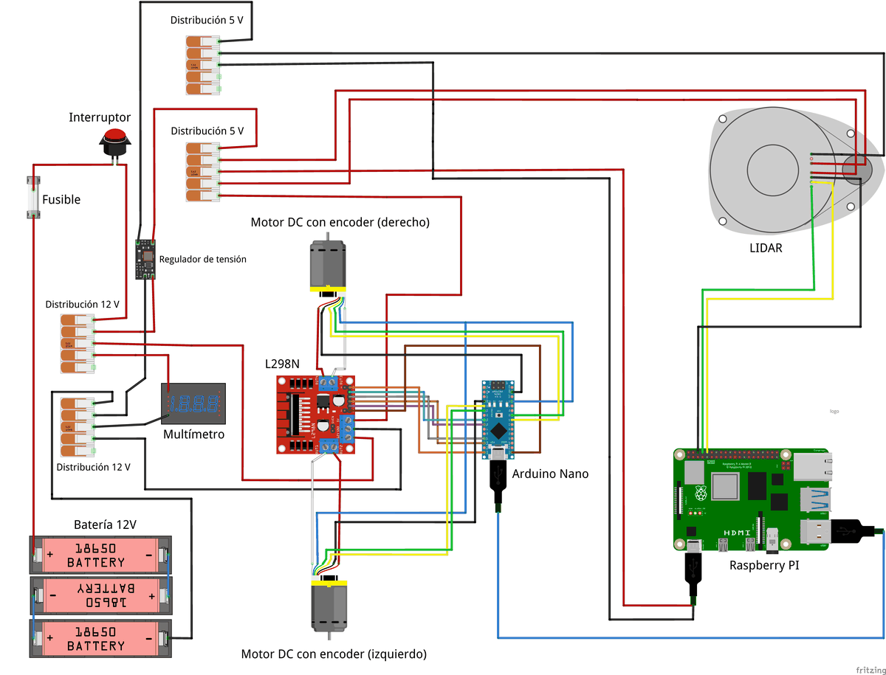

Lo necesario para repetir este robot
Los materiales montados en el robot costaron 444 643 pesos, y 582 447 con los accesorios de operación. Falta sumar un computador para el mapeo y la navegación. El software parte de proyectos abiertos, todos citados aquí, con una serie de videos que explica casi cada paso. Si empiezas hoy, usa una distribución vigente de ROS 2 y no Foxy. Lo que más me sirvió fue aprender a medir, a registrar y a leer código ajeno.
Lista de materiales
| Elemento | Cantidad | Costo (CLP) |
|---|---|---|
| Componentes principales | ||
| Raspberry Pi 4 Modelo B de 8 GB, carcasa de aluminio y microSD de 64 GB | 1 | 91 759 |
| RPLidar A1 | 1 | 83 324 |
| Arduino Nano V3 y placa base con bornes de tornillo | 1 | 8 000 |
| Motorreductor JGA25-370 de 12 V con encoder y rueda | 2 | 18 038 |
| Driver L298N | 1 | 3 000 |
| Módulo reductor DC-DC de 25 W | 1 | 18 858 |
| Batería de 12 V y 3000 mAh con adaptador de montaje | 1 | 25 658 |
| Rueda loca | 1 | 1 893 |
| Subtotal componentes principales | 250 530 | |
| Energía, montaje y cableado | ||
| Interruptor, portafusible, conectores XT60 y bloque de distribución | varios | 9 547 |
| Filamento PLA+ de 1 kg | 1 | 13 353 |
| Tornillería, separadores y tuercas de inserción térmica | 6 kits | 127 234 |
| Cables, conectores y terminales | varios | 43 979 |
| Total del robot | 444 643 | |
| Operación y desarrollo, fuera del robot | ||
| Router de viaje GL.iNet GL-MT300N-V2 | 1 | 22 140 |
| Cables de red RJ45 Cat-6 | 3 | 8 376 |
| Cargador de baterías de 12 V | 1 | 16 169 |
| Baterías de 12 V de repuesto | 2 | 41 436 |
| Transmisor y receptor HDMI inalámbrico, cables micro HDMI y hub USB | varios | 49 683 |
| Total del proyecto | 582 447 | |
El precio y la fecha de cada una de las 51 compras, con el peso de cada partida en el costo total, están en Anatomía del robot.
La tornillería, los separadores y las tuercas de inserción suman 127 234 pesos, más que la Raspberry Pi o que el láser por separado, porque se compraron kits completos. Si construyes uno, comprar solo las piezas que necesitas baja bastante el costo del montaje 1.
Chasis impreso en 3D
El chasis y las cubiertas toman como referencia un diseño abierto de robot aspiradora publicado en Thingiverse 2. La forma baja y redondeada deja el láser libre arriba y permite girar en pasillos estrechos.
Los parámetros generales de impresión son los de una impresora doméstica. La tolerancia de ensamblaje importa más que la calidad superficial, porque las piezas se atornillan con tuercas de inserción térmica 1.
| Material | PLA+ |
|---|---|
| Altura de capa | 0,2 mm |
| Relleno | 20 a 30 % |
| Paredes perimetrales | 3 |
| Temperatura de boquilla | 205 a 215 °C |
| Temperatura de cama | 55 a 60 °C |
| Velocidad de impresión | 50 mm/s |
| Tolerancia de ensamblaje | 0,2 a 0,4 mm |
Conexiones entre Arduino, driver y encoders

| Función | Pin del Arduino | Destino |
|---|---|---|
| PWM avance izquierdo | D6 | IN3 del L298N |
| PWM retroceso izquierdo | D10 | IN4 del L298N |
| PWM avance derecho | D9 | IN1 del L298N |
| PWM retroceso derecho | D5 | IN2 del L298N |
| Habilitación izquierda | D13 | ENB del L298N |
| Habilitación derecha | D12 | ENA del L298N |
| Encoder izquierdo, canales A y B | D3 y D2 | encoder izquierdo |
| Encoder derecho, canales A y B | A4 y A5 | encoder derecho |
Para que los puertos no cambien de nombre al reconectar, se usan reglas udev. El Arduino queda como /dev/motor_controller y el láser como /dev/rplidar o /dev/rlidar_gpio, según si va por USB o por los pines de la Raspberry Pi 1.
Versiones de software
Estas son las versiones exactas con que obtuve los resultados 1. Sirven para reproducirlos, no como recomendación para un proyecto nuevo.
| Sistema operativo | Ubuntu 20.04.6 LTS |
|---|---|
| ROS 2 | Foxy Fitzroy |
| Middleware | rmw_cyclonedds_cpp |
| Simulador | Gazebo Classic 11.11.0 |
| slam_toolbox | 2.4.1 |
| nav2_bringup | 0.4.7 |
| ros2_control | 0.11.0 |
| Computador | Intel Core i7-10610U, 4 núcleos, 32 GB de RAM |
Si empiezas hoy, ten en cuenta que ROS 2 Foxy dejó de tener soporte en junio de 2023 y Gazebo Classic en enero de 2025. Las distribuciones de ROS 2 que salen en años pares tienen cinco años de soporte. Jazzy Jalisco, de mayo de 2024, tiene soporte hasta mayo de 2029 3. Usa una distribución vigente con la versión de Gazebo que recomiende su documentación, y espera tener que ajustar los paquetes base, que fueron escritos para Foxy.
Una ruta de videos para aprender
Los paquetes adaptados en esta tesis vienen de Articulated Robotics, el proyecto de Josh Newans, que documentó en video la construcción de un robot móvil muy parecido. Seguirlos en este orden es una forma ordenada de recorrer el mismo camino 4.
1. Simular. Modelar el robot y probarlo en Gazebo. Relacionado con El gemelo digital.
2. Mover. Conectar ros2_control con el hardware real. Relacionado con Anatomía del robot.
3. Mapear. Construir el mapa con slam_toolbox. Relacionado con Ver y mapear.
4. Navegar. Configurar Nav2 sobre el mapa. Relacionado con Planificar y seguir rutas.
Repositorios y documentación de base
Son los proyectos públicos de los que partió el robot, no los archivos que usé. Las versiones adaptadas, las configuraciones y los registros de los ensayos todavía no están publicados. El detalle de qué está disponible y qué falta está en Materiales originales.
Una ruta recomendada para replicarlo
Es un orden sugerido para quien empieza: simular antes de construir y avanzar de abajo hacia arriba, sin pasar a la capa siguiente hasta medir la anterior. El orden no sigue la cronología de mi trabajo. La última columna dice qué hice en cada paso, para distinguir lo medido de lo que queda pendiente 1.
| Paso | Qué hacer | En esta tesis |
|---|---|---|
| 1. Modela | URDF con medidas reales, probado en simulación. | Realizado Gemelo en Gazebo Classic verificado con cuatro criterios de funcionamiento, sin comparación cuantitativa con el robot sobre una misma variable. Ver el gemelo. |
| 2. Construye | Separa la energía de motores y electrónica. | Realizado Dos rieles separados, 12 V para motores y 5 V para electrónica. Ver el esquema. |
| 3. Mide los encoders | Sentido del conteo y pulsos por vuelta reales. | Realizado Diez vueltas por rueda, con promedios de 1976 y 1969 pulsos. El firmware usa un valor único de 1980. Ver la medición. |
| 4. Sintoniza | Modelo de cada rueda, ganancias y ajuste en el robot. | Parcial Modelo de primer orden con retardo, búsqueda con PSO y ajuste final en el robot. La ley heredada opera como PI, su estabilidad se verificó sobre un modelo lineal y se evaluó en un solo punto de operación. Ver el control. |
| 5. Valida la odometría | Contra una cinta, con repeticiones. | Validado Recta de 2 m repetida cinco veces, con error medio de 3,63 % frente a la cinta e intervalo al 95 % de 3,08 a 4,18 %. El giro no midió error odométrico angular. Ver el ensayo. |
| 6. Mapea | Construye el mapa, revisa que el área sea estable entre corridas y compáralo con un plano medido del lugar. | Realizado Los mapas evaluados son los de las corridas de exploración: cinco de seis dieron un mapa válido, con área libre casi igual en todas y a 3,4 cm en promedio del plano medido con huincha. Ver la comparación. |
| 7. Navega a metas fijas | Define metas sobre marcas medidas en el recinto, usa una localización coherente en el marco del mapa, con SLAM o con AMCL, y registra por meta el resultado, el error de posición final, el tiempo y el largo recorrido. | Pendiente No se ejecutó. El script quedó preparado, sin registros de salida, sin medir el error final y con poses definidas solo para el mundo simulado. No hay tasa de éxito ni error de posición. Ver qué se evaluó. |
| 8. Explora | Suma las fronteras cuando la navegación ya está medida. | Realizado Seis ejecuciones, cinco terminaron solas con mapa válido. Se hizo sin el paso 7, y la navegación se evaluó solo sobre las metas del explorador. Ver la exploración. |
Si replicas el trabajo, el paso 7 es el aporte más directo que puedes hacer, porque es lo que falta para tener un indicador cuantitativo de la navegación. Está descrito como trabajo futuro en La evidencia. Y en cualquier paso, repite cada ensayo al menos de 6 a 10 veces: con 15 éxitos en 15 intentos se puede afirmar una tasa sobre el 78 %, y con 5 de 6 solo sobre el 35,9 %. Ver Cuánto dicen cinco repeticiones.
Lo que aprendí en el taller
Cada una sale de un episodio concreto del trabajo, enlazado a su explicación. Varias se desarrollan como ensayo en Lecciones de ingeniería.
- Mide contra algo independiente. La odometría se comparó con una cinta, y el movimiento real se probó con el crecimiento del mapa, no con los encoders. Ver la corrida sin avance.
- Diseña el ensayo para que mida lo que crees que mide. Una orden de giro por sobre el límite del controlador mezcló dos efectos. Ver el ensayo de giro.
- Cuenta con identificadores únicos y guarda los datos crudos. Los contadores automáticos contaban mensajes, no metas. Ver el caso.
- Lee el código heredado antes de confiar en sus nombres. Una ley llamada PID resultó ser un PI incremental. Ver la ley de control.
- Revisa los tipos de datos cuando cambias un cálculo. Un entero de 16 bits anuló el término integral de una rueda. Ver por qué.
- Fija la semilla de todo método aleatorio. Sin ella, el PSO da resultados distintos en cada ejecución. Ver el PSO.
- Ponle la hora correcta a cada medición. Un barrido con la hora de publicación queda asociado a una posición posterior. Ver el láser.
- Conoce la resolución de tu instrumento antes de informar decimales. Con pasos de 0,01 m/s, un sobreimpulso pequeño no se ve. Ver la resolución.
- Separa la energía de motores y electrónica. Reduce la interferencia sobre los computadores. Ver el esquema.
- Diseña la seguridad desde el comienzo. Botón de hombre muerto, prioridad al mando y detención automática. Ver las tres capas.
- Congela las versiones para avanzar, pero planifica la migración. Lo que hoy da estabilidad mañana queda sin soporte. Ver versiones.
- Cita y respeta el código que adaptas. Decir qué es propio y qué es adaptado fortalece el trabajo. Ver el origen de cada paquete.
Fuentes de este tema
Los números del texto llevan a esta lista. Qué es cada referencia de la tesis y para qué la usa el trabajo se explica en la bibliografía de la tesis.
- TesisValderas Neculqueo, S. (2026). Navegación y exploración autónoma de interiores utilizando un robot móvil de tracción diferencial. UTEM. Metodología, y Tablas A1.1, A1.3, A3.2 y A3.4.
- Modelo 3Dmarcuslanzoni (2020). Vacuum Robot. Thingiverse. thingiverse.com/thing:4459513
- Referenciaendoflife.date. ROS 2. endoflife.date/ros-2. Y ROS 2 Documentation, End-of-Life Distributions. docs.ros.org
- VideosArticulated Robotics, canal de YouTube de Josh Newans. youtube.com/@ArticulatedRobotics